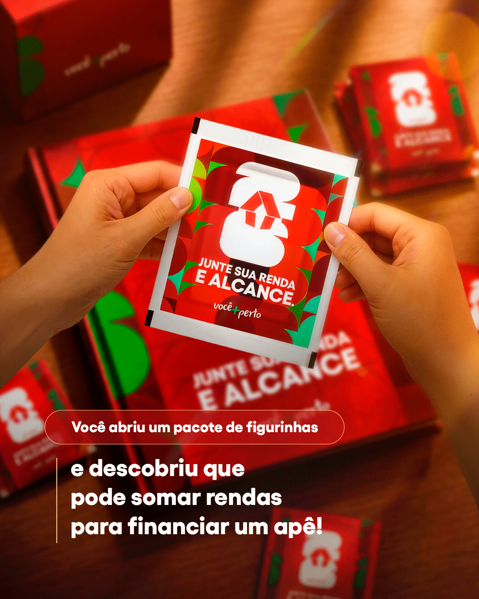
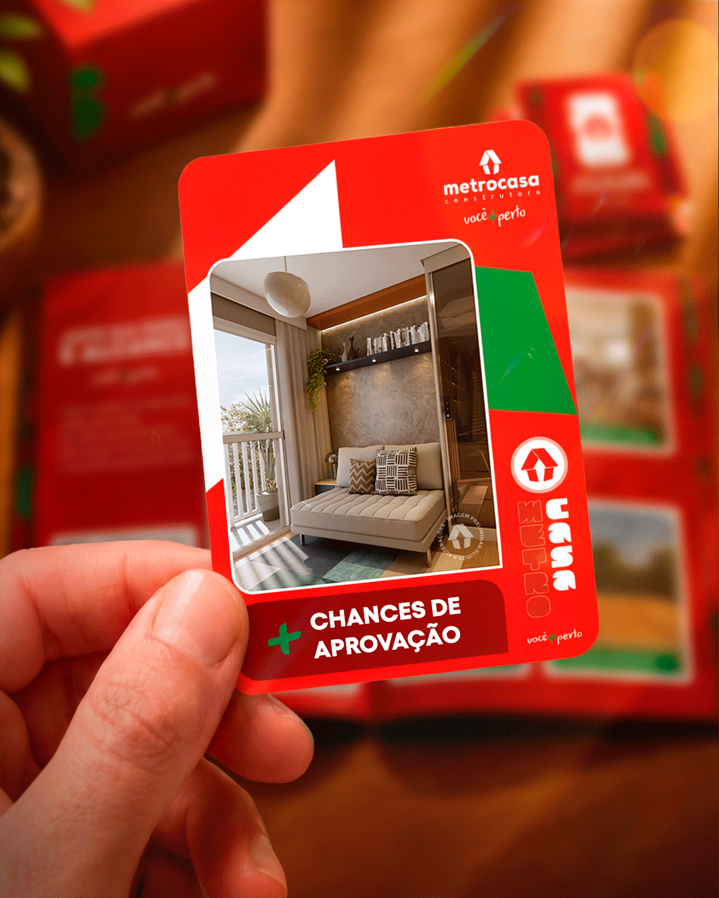
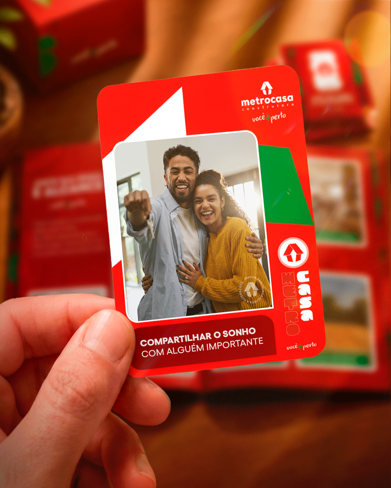
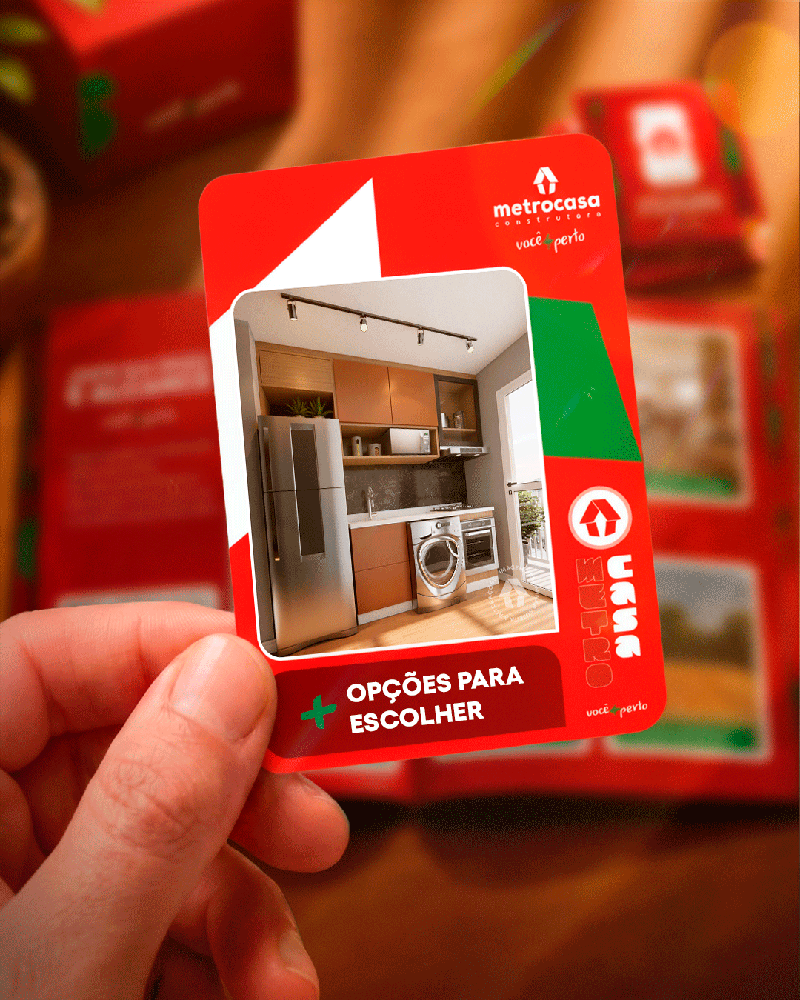
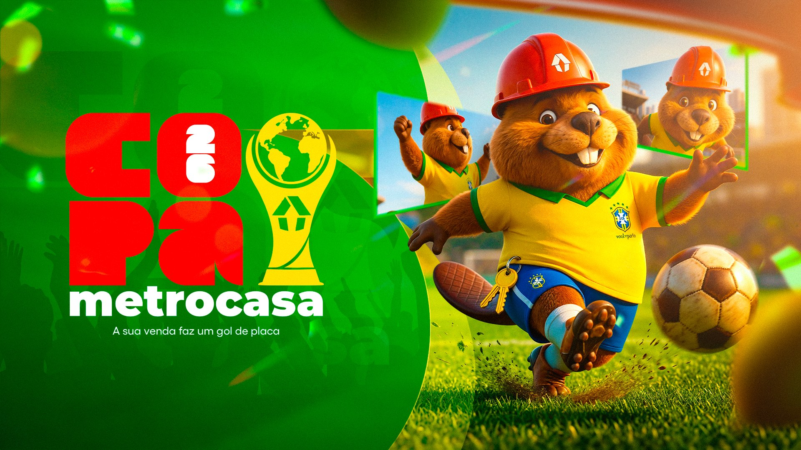
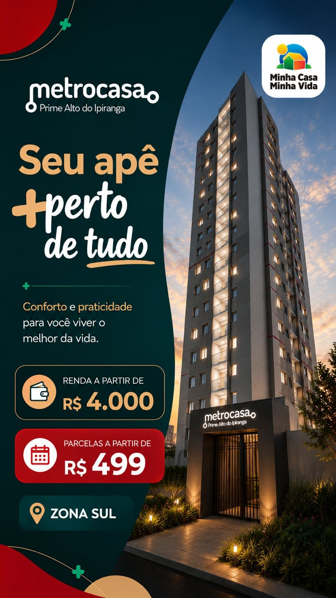
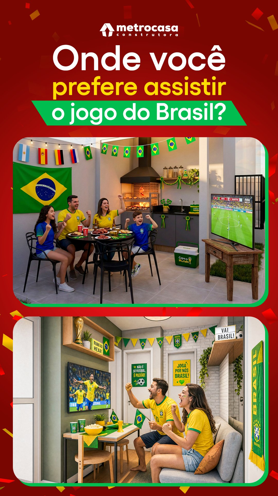

IA na criação:
mais tempo,
mesma qualidade.
Como a inteligência artificial entrou no fluxo do time Metrocasa — da criação à pesquisa e à mídia paga — e o que mudou nos primeiros entregáveis.
A IA devolveu horas ao time.
Feirão Arraiá de Ofertas
Cenário, iluminação e composição gerados com IA; oferta, tipografia e ajustes finos feitos à mão pelo time.
Carrossel “Junte sua renda”
Quatro cards animados com look de produção 3D — embalagem, álbum e figurinhas colecionáveis — sem abrir um software de 3D.





Capa Copa Metrocasa 26
O Obrinho em nível de render cinematográfico: personagem, estádio, luz e profundidade gerados com IA. O time entrou com identidade, logo da campanha e finalização.
Um acabamento que antes exigiria ilustração 3D terceirizada ou dias de produção interna.
Do estático ao vídeo — sem set de filmagem.
Lançamentos com bandeirão e fogos, a Mia animada interagindo em ambiente real e ação com a fachada da loja: peças em movimento que antes pediriam filmagem, motion ou 3D.
Do post ao filme completo.
1min48 de filme de lançamento do Bosque Giovanni Gronchi: motion graphics, render do empreendimento e aéreo real com o terreno demarcado — tudo costurado em um único fluxo de produção.
Criativos com IA já estão no ar.
Peças estáticas e em vídeo produzidas com IA rodando em campanhas reais no Meta Ads e no social — fachadas, ambientes decorados e aéreos com lettering.


Da peça ao lead qualificado.
Os criativos alimentam a campanha de geração de cadastros no Meta Ads: segmentação por raio de 8–10 km por empreendimento e formulário que qualifica antes de chegar ao corretor.
O anúncio
Vídeo Story 15s com a fachada do empreendimento + estáticos. Segmentação por raio e interesse atrai quem busca imóvel naquela região.
O formulário
3 perguntas obrigatórias: comprovação de renda, renda mensal e saldo de FGTS. A concorrência pergunta menos — e recebe lead frio.
O cadastro
O lead chega ao CRM com renda, vínculo e FGTS mapeados. O corretor já inicia o contato sabendo o enquadramento no MCMV.
Copys de campanha em minutos
A IA foi treinada com as informações de todos os empreendimentos Metrocasa. O que era horas de trabalho focado por anúncio — pensar ganchos, escrever variações, revisar — virou um fluxo de minutos por campanha.
- Texto principal — com gatilhos focados em quem busca apartamento, e variações em segundos
- Texto alternativo — curto e direto, para quem lê rápido rolando o feed
- Título e descrição — headlines focadas no clique: com parcela, renda, urgência ou benefício
- Seleção de CTA — o botão certo para cada cenário (Inscreva-se, Saiba Mais, Enviar Mensagem)
Pesquisa de entorno com IA
Levantamento completo para mapa de localização (Guaianases): mobilidade, comércio, educação, saúde, lazer e gastronomia — 16 solicitações consolidadas em um único fluxo, com análise comercial pronta.
- 16 solicitações: mobilidade, comércio, educação, creches, saúde, farmácias, lazer, shopping, gastronomia e facilidades
- Listas ordenadas por tempo a pé e de bicicleta, prontas para o mapa
- Curadoria + análise comercial: os argumentos de venda já identificados
- Base reutilizável para os próximos empreendimentos
Mais rápido não significa
menos acabamento.
Identidade preservada
Cores oficiais, grid, tipografia e os personagens da marca em todas as peças. A IA acelera a produção — a direção de arte continua sendo do time.
Nível de produção 3D e vídeo
Iluminação cinematográfica, materiais realistas e agora peças em movimento — sem software 3D, set de filmagem ou fornecedores externos.
Mais versões, mais inteligência
O tempo economizado vira iteração e pesquisa: mais variações de criativo para testar, mapas de localização mais completos e resposta mais rápida ao comercial.
A IA não substituiu o time de criação. Ela tirou o trabalho repetitivo do caminho e deixou as pessoas focadas no que dá resultado: conceito, marca e ideia.
Isso foi só o primeiro mês.
Novos criativos já estão em produção com o mesmo fluxo. A cada peça, o processo fica mais redondo — e o ganho de tempo, maior.